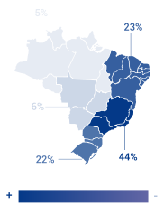
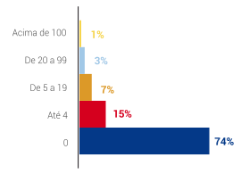
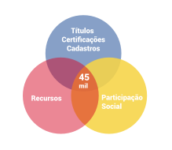
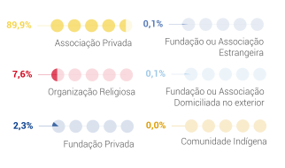
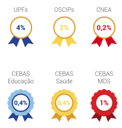
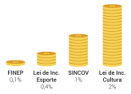
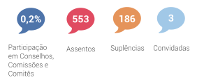

Acesso à informação
Portal de Estado do Brasil
Ir para o
Conteúdo 1
Ir para o
Menu 2
Ir para o
Rodapé 3
Acessibilidade
Mapa do site
Contraste
Tamanho do texto
A+
A
A-
Sobre o portal
Dúvidas frequentes
Email
Senha
Esqueci a senha
Registrar-se
Carlos Silva
Configurações
Infográficos
Mapa
aba atual:
Infográficos
Mapa
Infográficos
Selecione o infográfico.
OSCs em Números
OSCs e os Recursos
OSCs Natureza jurídica/Faixas de vínculos
OSCs em números
303 mil
OSCs

2,1 milhões
de vínculos formais

Relação com o governo Federal
15%
das OSCs

Instituições por
Natureza Jurídica
(%)

Títulos e certificações

Recursos públicos

Participação social

Portal das Organizações da Sociedade Civil © 2013
Versão BETA?
Apoio
Realização